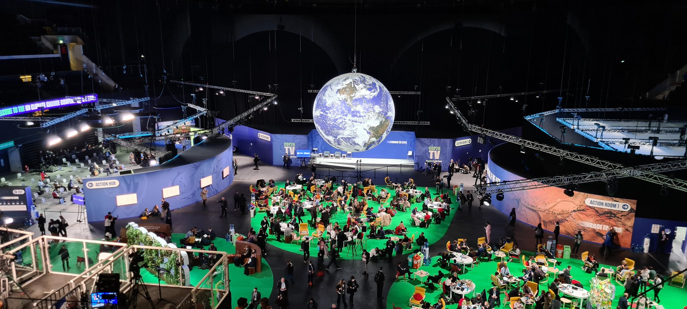

COP26 #3

I’m a Registered Nurse and a Population Health researcher. I’m also very concerned about climate change and the challenges it poses to us as a global community. One of my big motivations for attending COP26 was exploring the relationship between climate change and health, as well as the similarities between the two issues. What I’ve found has been quite shocking.
Health is not a priority
In the first few days that I’ve been here I have listening to talks, reviewed media reports and read about the ongoing international negotiations. I am struck by how little focus there is on health.
Each day at the conference has a theme. These include energy, nature, finance, transport and gender but nothing on arguably the most important measure of societal success: human health and well-being. Save for the World Health Organisation’s ‘Health Pavilion’ (One of 80+ in the SEC) you might struggle to find any discussion around the impacts of climate change on global health.
Health Inequalities and Climate Change
I think when we talk about these two issues there are strong similarities. Both are problems that are largely caused by systemic forces. Social, economic and power structures which create and reinforce problems. Crucially the impacts of these structures and systems are not equally distributed.
Health outcomes are generally worst in the most deprived places and for people with the least access to resources which can improve their health. The worst effects of climate change are and will be felt the hardest by those in the Global South, who are simultaneously the most vulnerable and those who contribute the least to causing the problem.
Finally, one of the biggest similarities is that the solutions to these issues are very often framed around behavioural change and individual actions. Sections of the media, national governments and industries promote this approach to distract from their own questionable behaviour and responsibilities.
If we are to face down these challenges, and have any hope of real change, we must acknowledge the true barriers and work to dismantle them.
Next Blog Post
Later this week I’ll be returning to Aberdeen and will be writing up some of my thoughts and reflections around COP26 and perhaps suggesting a few ways the whole thing could be done better!